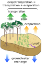

recharge
process

Source: Wikipedia
Wikipedia Page (Something wrong with this association? Let us know.)
Wikidata Page (Something wrong with this association? Let us know.)
Occurs in:
- soil_phreatic-zone_top_water_recharge__domain_time_integral_of_volume_flux
- soil_phreatic-zone_top_water_recharge__mass_flux
- soil_phreatic-zone_top_water_recharge__volume_flux
- soil_phreatic-zone_top_water_recharge__time_integral_of_volume_flux
- groundwater_recharge__volume_flux
- groundwater_well_recharge__volume_flux